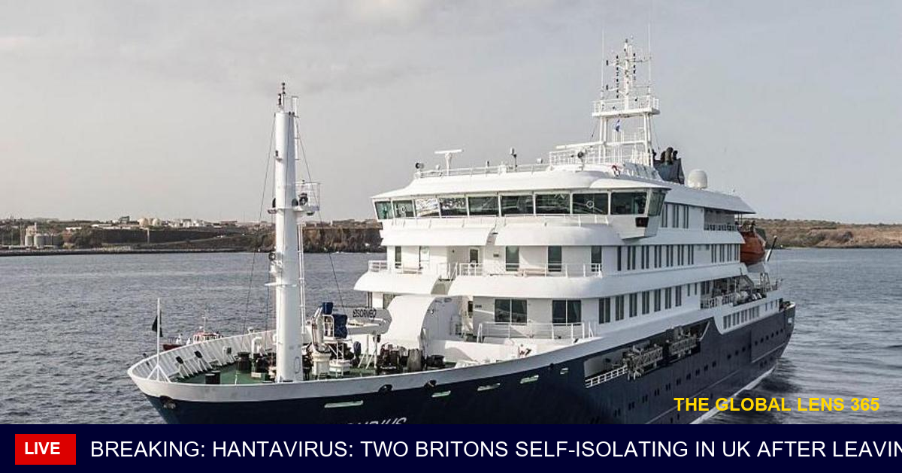

🔴 BREAKING | Hantavirus Scare: UK Duo in Self-Isolation After Abandoning Cruise Ship Amid Outbreak The swift decision by two British passengers to disembark from the affected cruise ship and enter self-isolation in the UK underscores the growing concerns surrounding the hantavirus outbreak, highlighting the need for vigilant monitoring and proactive measures to prevent further spread. As the situation continues to unfold, health officials are on high alert, stressing the importance of prompt action and cooperation from travelers who may have been exposed to the virus, according to reports from BBC News. 🌍 Follow @TheGlobalLens365 for updates. #WorldNews #Breaking #GlobalLens365